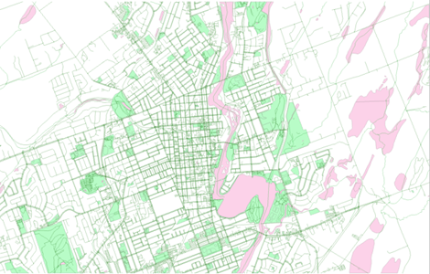
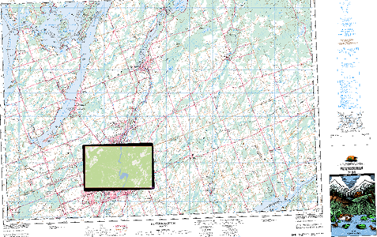
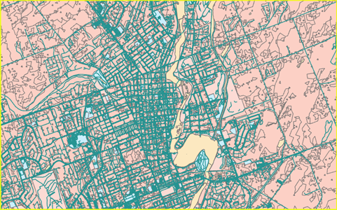

Unlocking the Power of Spatial Analysis!
Overview
Embark on a transformative journey of Spatial Analysis with our team. We specialize in harnessing the transformative capabilities of ArcGIS to provide cutting-edge spatial analysis solutions. Our dedicated team of GIS experts is committed to assisting businesses, organizations, and government entities in leveraging location-based data for informed decision-making.
Our Expertise
Vector Data Analysis
Our consultants guide you through the intricacies of vector data, unraveling the layers, attributes, and geometry that define its structure. We can optimize vector data usage to harness the power of vector data for diverse applications, from mapping and analysis to complex spatial queries. Our experts ensure you master the art of leveraging vector data to extract valuable insights and drive informed decision-making.
GIS Data Management Excellence
Efficient data conversion to seamlessly navigate the challenges of GIS data management with our expertise in data conversion. Whether it's transforming data formats or migrating between systems, our consultancy services ensure a smooth transition while preserving data integrity. Learn proven strategies for organizing, storing, and maintaining GIS data efficiently. Our consultants guide you in implementing best practices for version control, data cleaning, and maintaining a robust data management framework. Below, you can view the work our team did for vector data analysis in the Peterborough area.
Raster Data Structure
Master advanced techniques for raster data analysis, including image classification, interpolation, and overlay operations. Our consultants streamline the conversion process, enabling the seamless transformation of raster data into geodatabase grids. Experience a smooth transition while preserving data integrity and spatial accuracy. Tailored to your project requirements, our consultants assist in designing geodatabase grids that align with industry standards and best practices. We then optimize the structure for efficient data storage, retrieval, and analysis.
Elevating Your GIS Capabilities with Precision and Insight Through Building an Advanced Geodatabase.
We specialize in empowering clients with the skills and expertise needed to build and leverage advanced geodatabases effectively. Our consultancy services cover a range of essential components, from enriching spatial datasets to mastering topological relationships. We guide you through the process of creating robust advanced geodatabases tailored to your specific needs. Learn to structure and organize your spatial data for optimal performance and efficient query operations. Harness the power of attribute enrichment through join functionality. Discover how to seamlessly integrate additional information into your spatial datasets, enabling more comprehensive and insightful analysis. Our consultants provide hands-on guidance on utilizing domains effectively to streamline workflows and enhance the quality of your spatial datasets. Explore how different spatial features relate to one another in a geometric context, laying the foundation for advanced spatial analysis. Our consultants assist you in implementing topological rules, ensuring the integrity, accuracy, and reliability of your spatial data. Our consultancy services guide you through effective correction techniques, ensuring that your spatial data maintains its accuracy and reliability.
Map Overlay Analysis and Model Builder Efficiency
We specialize in providing expertise to help navigate the intricate realms of map overlay analysis and geoprocessing operations. Our consultancy services focus on empowering clients with the skills to perform advanced spatial analyses seamlessly. Our consultants guide you through the art of map overlay analysis, enabling you to explore spatial relationships and uncover valuable insights by overlaying multiple layers to derive meaningful information and make informed decisions. Explore the power of Model Builder to streamline and automate your overlay analysis workflows. Our consultants provide hands-on guidance on creating custom geoprocessing models, enhancing efficiency, and ensuring reproducibility.
This is the final output of the raster analysis we did.